Code
import polars as pl
from polars import col, when, lit
import polars.selectors as cs
import seaborn as snsIn this notebook, we’ll work through a complete Exploratory Data Analysis (EDA) workflow. EDA is the process of getting to know your data before any formal analysis - understanding its structure, spotting patterns, identifying problems, and developing intuitions.
We’ll assume that you’re familiar with generally familiar with EDA from PSYC 201A, so this notebook will demonstrate some common tasks in Python combining polars and seaborn. We’ll use a dataset of characters from the Star Wars universe.
This notebook walks through some realistic EDA workflow steps you’re likely to encounter. Follow along, run the code, and make sure you understand what’s happening and why. When we move on to building and fitting statistical models, it’ll be important to have an understanding of some key properties of your data:
EDA is visual detective work. You’re trying to understand what you’re working with to better inform and guide the later modeling choices you might make.
Let’s import our tools:
import polars as pl
from polars import col, when, lit
import polars.selectors as cs
import seaborn as snsThe first step in any EDA is simply looking at your data. What do you have?
Let’s load the Star Wars dataset. This contains information about characters from the Star Wars universe:
sw = pl.read_csv("data/starwars.csv")
sw| name | height | mass | hair_color | skin_color | eye_color | birth_year | sex | gender | homeworld | species |
|---|---|---|---|---|---|---|---|---|---|---|
| str | f64 | f64 | str | str | str | f64 | str | str | str | str |
| "Luke Skywalker" | 172.0 | 77.0 | "blond" | "fair" | "blue" | 19.0 | "male" | "masculine" | "Tatooine" | "Human" |
| "C-3PO" | 167.0 | 75.0 | null | "gold" | "yellow" | 112.0 | "none" | "masculine" | "Tatooine" | "Droid" |
| "R2-D2" | 96.0 | 32.0 | null | "white, blue" | "red" | 33.0 | "none" | "masculine" | "Naboo" | "Droid" |
| "Darth Vader" | 202.0 | 136.0 | "none" | "white" | "yellow" | 41.9 | "male" | "masculine" | "Tatooine" | "Human" |
| "Leia Organa" | 150.0 | 49.0 | "brown" | "light" | "brown" | 19.0 | "female" | "feminine" | "Alderaan" | "Human" |
| … | … | … | … | … | … | … | … | … | … | … |
| "Finn" | null | null | "black" | "dark" | "dark" | null | "male" | "masculine" | null | "Human" |
| "Rey" | null | null | "brown" | "light" | "hazel" | null | "female" | "feminine" | null | "Human" |
| "Poe Dameron" | null | null | "brown" | "light" | "brown" | null | "male" | "masculine" | null | "Human" |
| "BB8" | null | null | "none" | "none" | "black" | null | "none" | "masculine" | null | "Droid" |
| "Captain Phasma" | null | null | "none" | "none" | "unknown" | null | "female" | "feminine" | null | "Human" |
Polars shows us the first and last few rows, plus the column types. Notice: - str columns contain text (names, categories) - i64 columns contain integers - f64 columns contain decimals (floating point numbers)
Let’s get the basic dimensions:
print(f"Rows: {sw.height}")
print(f"Columns: {sw.width}")Rows: 87
Columns: 1187 characters with 11 attributes each. Let’s see all the column names:
sw.columns['name',
'height',
'mass',
'hair_color',
'skin_color',
'eye_color',
'birth_year',
'sex',
'gender',
'homeworld',
'species']Before diving into analysis, we should understand what we’re working with: - name: Character name - height: Height in centimeters - mass: Weight in kilograms - hair_color, skin_color, eye_color: Physical appearance - birth_year: Years before the Battle of Yavin (BBY) - sex: Biological sex (male, female, hermaphroditic, none) - gender: Gender identity (masculine, feminine) - homeworld: Planet of origin - species: Species (Human, Droid, Wookiee, etc.)
This context matters! “mass” in Star Wars includes robots and aliens with very different body compositions than humans.
Missing data is everywhere in real datasets. Let’s see how much we’re dealing with:
sw.null_count()| name | height | mass | hair_color | skin_color | eye_color | birth_year | sex | gender | homeworld | species |
|---|---|---|---|---|---|---|---|---|---|---|
| u32 | u32 | u32 | u32 | u32 | u32 | u32 | u32 | u32 | u32 | u32 |
| 0 | 6 | 28 | 5 | 0 | 0 | 44 | 4 | 4 | 10 | 4 |
This tells us: - height is missing for 6 characters - mass is missing for 28 characters (about 1/3 of the data!) - birth_year is missing for 44 characters (over half!) - sex, gender, homeworld, species have some missing values too
Let’s calculate the percentage missing for each column. If we wrap the entire code-block in () Python won’t care about indentation, so we can lay out the code in a more reader friendly way (like R’s pipes):
# Using '*' inside col() selects all columns
(
sw
.null_count()
.select(col('*') / sw.height * 100)
.transpose(
include_header=True,
header_name="column",
column_names=["pct_missing"]
)
.sort("pct_missing", descending=True)
)| column | pct_missing |
|---|---|
| str | f64 |
| "birth_year" | 50.574713 |
| "mass" | 32.183908 |
| "homeworld" | 11.494253 |
| "height" | 6.896552 |
| "hair_color" | 5.747126 |
| … | … |
| "gender" | 4.597701 |
| "species" | 4.597701 |
| "name" | 0.0 |
| "skin_color" | 0.0 |
| "eye_color" | 0.0 |
Sometimes missing data has patterns. Let’s visualize which rows have missing values:
This is new function that we didn’t meet in the previous notebook. And we’ve never called sns.FacetGrid directly - so far we’ve just working with the outputs of sns.relplot, sns.catplot, etc
Don’t sweat it - just try to build your intuitions about what’s happening below. Remember that we saw .map_dataframe when trying to layer plots by passing in any plotting function that understands our data. Well if we start with an empty FacetGrid then we can use the same approach to use sns.heatmap to build it from scratch!
# Create a boolean DataFrame: True where data is missing
missing_matrix = sw.select(col('*').is_null()).to_pandas()
# Initialize the facet grid first - just data no aesthetic mappings
grid = sns.FacetGrid(data=missing_matrix, aspect=.75, height=8)
# Map the seaborn heatmap function
grid.map_dataframe(sns.heatmap, cmap='Grays', yticklabels=sw['name'], cbar=False)
# Adjust aesthetics
grid.tick_params(axis='y', labelsize=6)
grid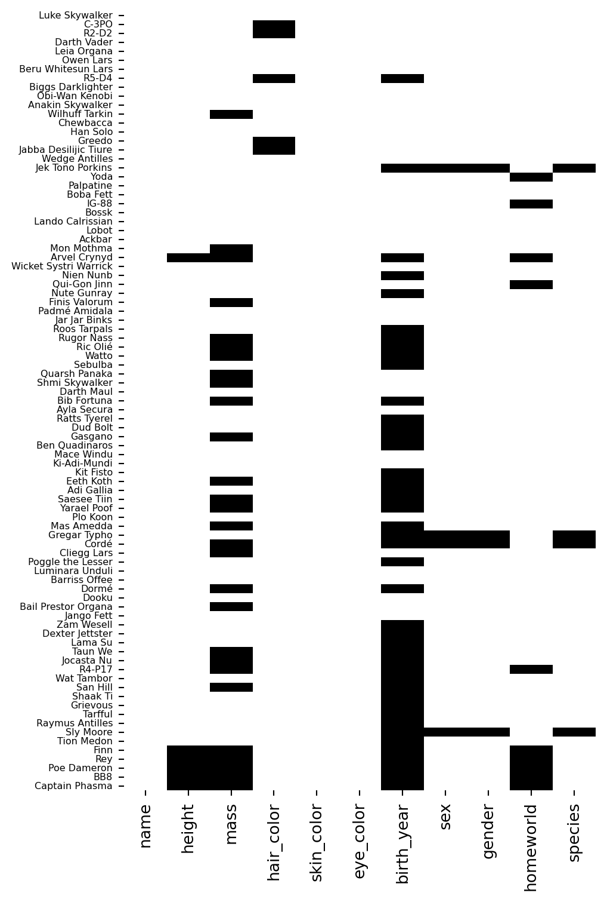
Each row is a character, each column is a variable. Dark cells indicate missing values.
Notice that birth_year and mass have scattered missing values across many characters - it’s not concentrated in a particular group.
Try to combine some other polars and seaborn workflows to explore the dataset for yourself and understand what you’re working with
# Your code here# Your code here# Explore the distribution of species
sw["species"].value_counts().sort("count", descending=True).head(10)| species | count |
|---|---|
| str | u32 |
| "Human" | 35 |
| "Droid" | 6 |
| null | 4 |
| "Gungan" | 3 |
| "Mirialan" | 2 |
| "Kaminoan" | 2 |
| "Wookiee" | 2 |
| "Twi'lek" | 2 |
| "Zabrak" | 2 |
| "Quermian" | 1 |
# Visualize the relationship between height and sex
sns.catplot(
data=sw.filter(col("sex").is_in(["male", "female"])),
x="sex",
y="height",
kind="violin"
).set_axis_labels("Sex", "Height (cm)")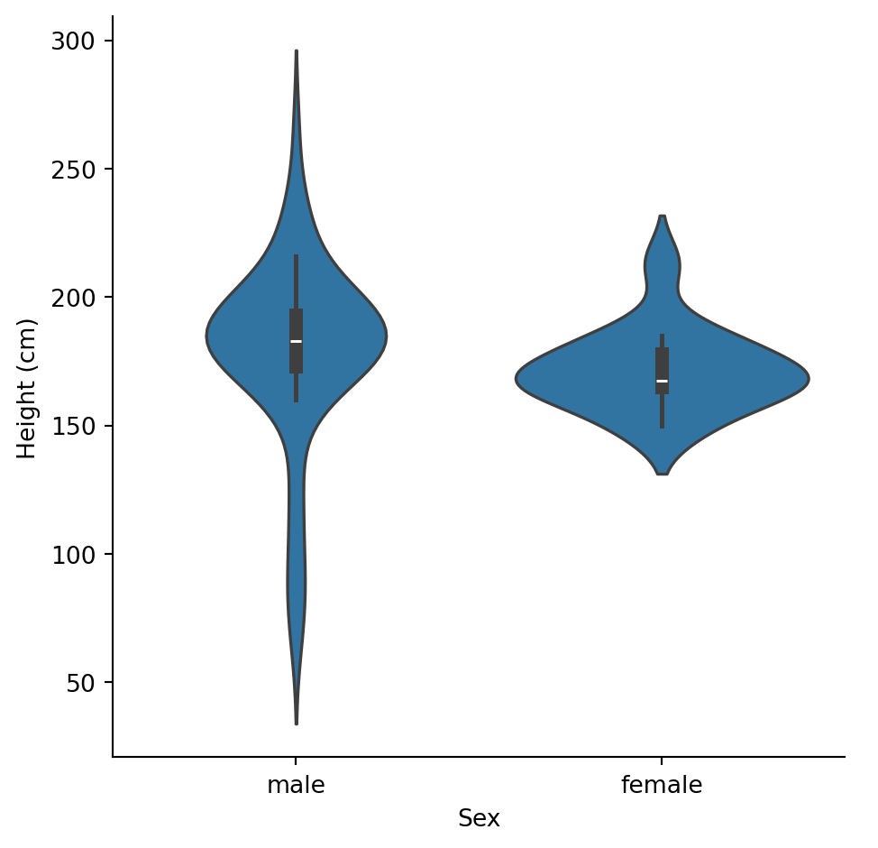
Before looking at relationships, understand each variable on its own.
We have three numeric variables: height, mass, and birth_year.
Let’s get summary statistics:
# cs.numeric() is a polars selector that gets all numeric columns
sw.select(cs.numeric()).describe()| statistic | height | mass | birth_year |
|---|---|---|---|
| str | f64 | f64 | f64 |
| "count" | 81.0 | 59.0 | 43.0 |
| "null_count" | 6.0 | 28.0 | 44.0 |
| "mean" | 174.604938 | 97.311864 | 87.565116 |
| "std" | 34.774157 | 169.457163 | 154.691439 |
| "min" | 66.0 | 15.0 | 8.0 |
| "25%" | 167.0 | 56.2 | 37.0 |
| "50%" | 180.0 | 79.0 | 52.0 |
| "75%" | 191.0 | 85.0 | 72.0 |
| "max" | 264.0 | 1358.0 | 896.0 |
Some observations: - height: Ranges from 66cm to 264cm. Mean is 175cm (about 5’9”). - mass: Ranges from 15kg to 1,358kg! That max is suspicious… - birth_year: Ranges from 8 to 896 BBY. That’s a huge range.
Let’s visualize these distributions:
sns.displot(
data=sw,
x="height",
kind="hist",
bins=20
).set_axis_labels("Height (cm)", "Count")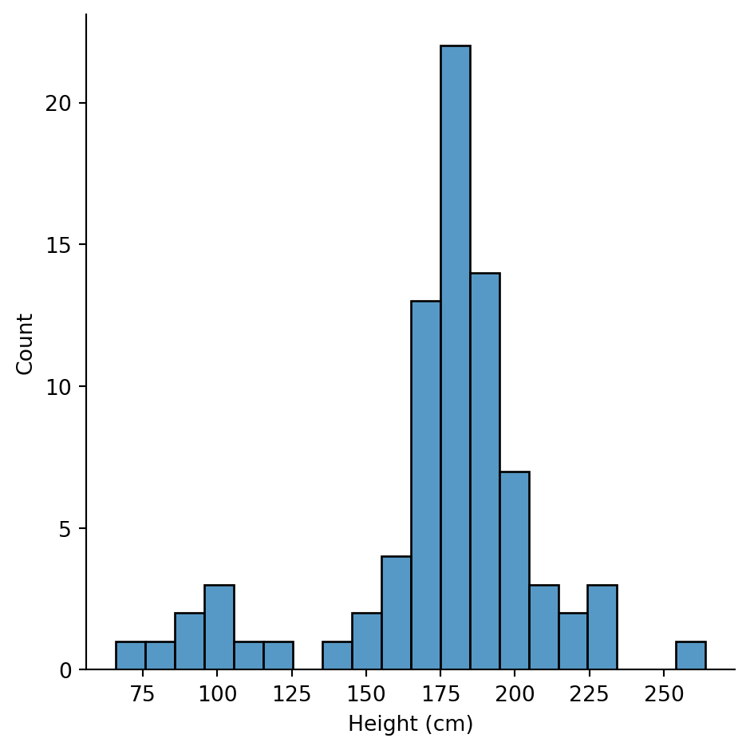
Height looks roughly normal, maybe slightly right-skewed. Most characters are between 150-200cm.
sns.displot(
data=sw,
x="mass",
kind="hist",
bins=30
).set_axis_labels("Mass (kg)", "Count")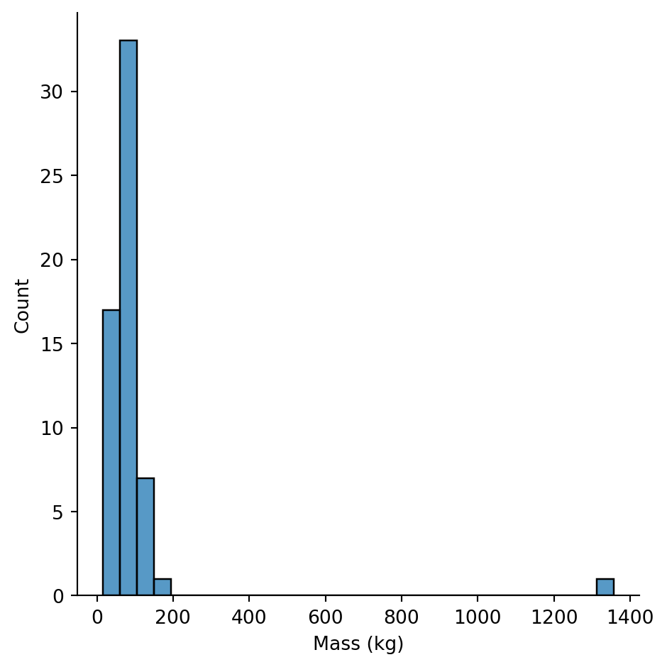
Whoa! The mass distribution is extremely right-skewed. Most characters cluster at low values, but there’s an extreme outlier pulling the scale.
Who is that outlier?
sw.filter(col("mass") > 500).select("name", "mass", "species")| name | mass | species |
|---|---|---|
| str | f64 | str |
| "Jabba Desilijic Tiure" | 1358.0 | "Hutt" |
Jabba the Hutt weighs 1,358 kg! That’s not an error - Hutts are massive slug-like aliens.
This is why EDA matters: an outlier like this would massively distort any mean or correlation we calculate.
Let’s look at mass excluding extreme outliers to see the main distribution:
sns.displot(
data=sw.filter(col("mass") < 200),
x="mass",
kind="hist",
bins=20
).set_axis_labels("Mass (kg)", "Count")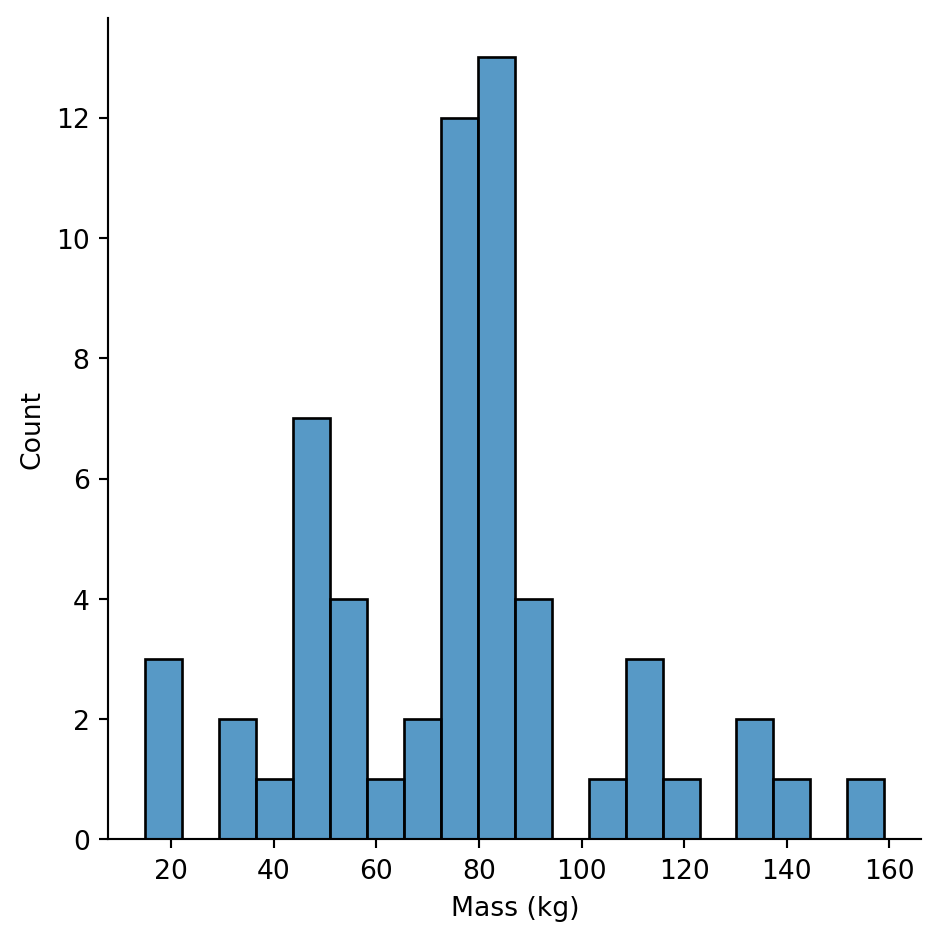
Now we can see the actual distribution. Most characters are between 50-100kg, with a cluster of lighter characters (possibly droids or smaller species).
For categorical variables, we want to know: What are the categories and how frequent is each?
sw["species"].value_counts().sort("count", descending=True).head(10)| species | count |
|---|---|
| str | u32 |
| "Human" | 35 |
| "Droid" | 6 |
| null | 4 |
| "Gungan" | 3 |
| "Mirialan" | 2 |
| "Twi'lek" | 2 |
| "Wookiee" | 2 |
| "Zabrak" | 2 |
| "Kaminoan" | 2 |
| "Pau'an" | 1 |
Humans dominate the dataset (35 characters), followed by Droids (6). Most species appear only once.
sw["homeworld"].value_counts().sort("count", descending=True).head(10)| homeworld | count |
|---|---|
| str | u32 |
| "Naboo" | 11 |
| null | 10 |
| "Tatooine" | 10 |
| "Kamino" | 3 |
| "Coruscant" | 3 |
| "Alderaan" | 3 |
| "Ryloth" | 2 |
| "Kashyyyk" | 2 |
| "Corellia" | 2 |
| "Mirial" | 2 |
Naboo and Tatooine are the most common homeworlds, which makes sense - many main characters come from these planets.
sns.catplot(
data=sw,
y="sex",
kind="count",
order=sw["sex"].value_counts().sort("count", descending=True)["sex"].to_list()
).set_axis_labels("Count", "Sex")
The dataset is heavily male-dominated, reflecting the original Star Wars films. “none” likely refers to droids.
Reflection: What does this imbalance mean for any analysis we might do comparing sexes? We have ~60 males but only ~16 females.
Try creating a few plots that help you understand the other variables in the dataset
# Your code here# Your code here# Your code here# Eye color distribution
sns.catplot(
data=sw,
y="eye_color",
kind="count",
order=sw["eye_color"].value_counts().sort("count", descending=True)["eye_color"].to_list(),
height=6
).set_axis_labels("Count", "Eye Color")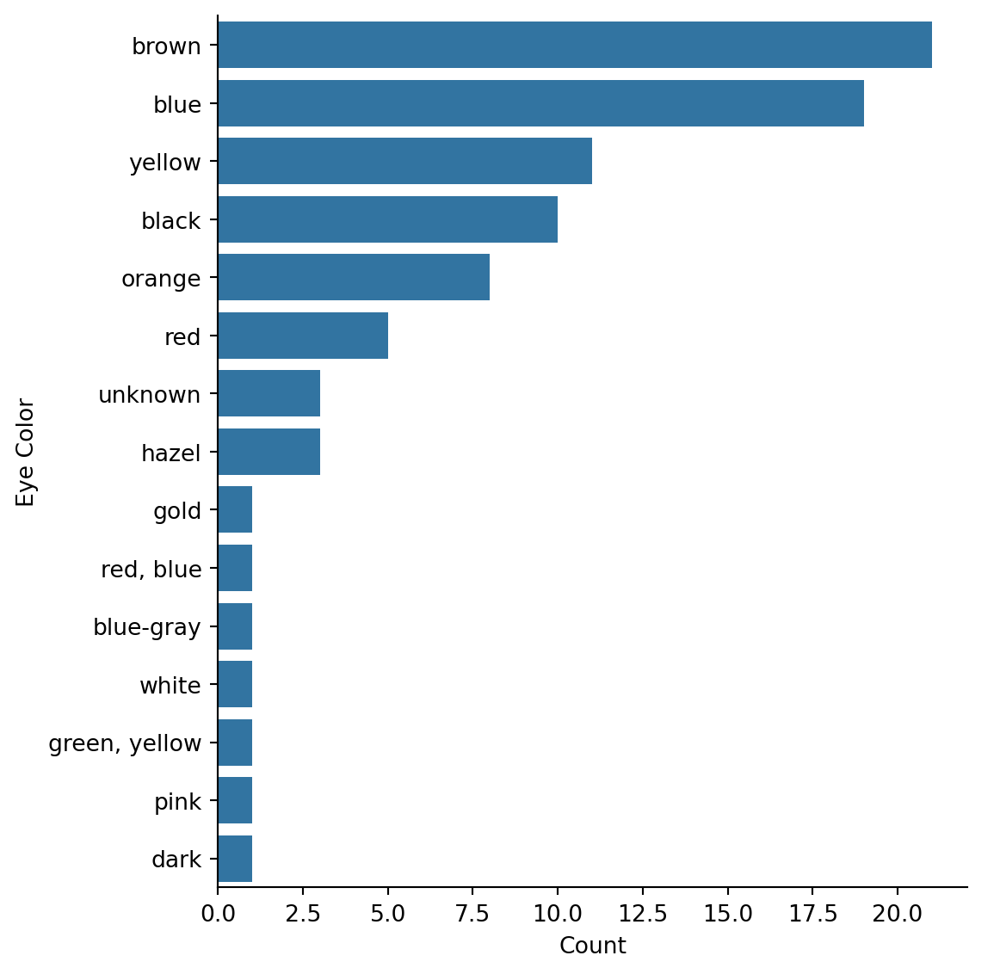
# Gender breakdown
sw["gender"].value_counts().sort("count", descending=True)| gender | count |
|---|---|
| str | u32 |
| "masculine" | 66 |
| "feminine" | 17 |
| null | 4 |
# Birth year distribution (excluding extreme values)
sns.displot(
data=sw.filter(col("birth_year").is_not_null() & (col("birth_year") < 200)),
x="birth_year",
kind="hist",
bins=15
).set_axis_labels("Birth Year (BBY)", "Count")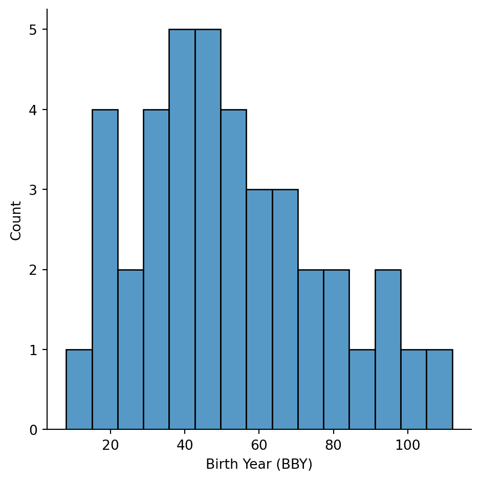
Now let’s look at how variables relate to each other.
The classic way to explore relationships between two numeric variables is a scatter plot.
sns.relplot(
data=sw,
x="height",
y="mass"
).set_axis_labels("Height (cm)", "Mass (kg)")
There’s a general positive relationship (taller characters tend to be heavier), but Jabba is way off in the corner distorting our view.
Let’s exclude extreme mass values and add a regression line:
sns.lmplot(
data=sw.filter(col("mass") < 200),
x="height",
y="mass"
).set_axis_labels("Height (cm)", "Mass (kg)")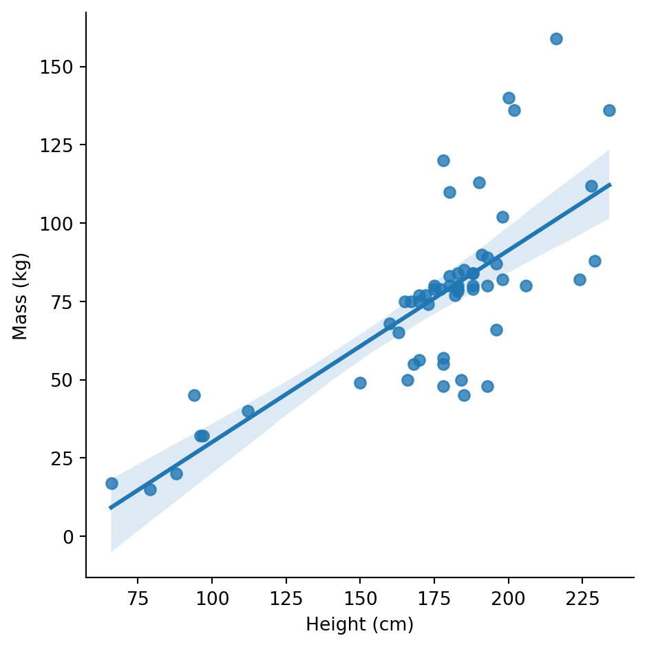
Now the relationship is clearer. But wait - are humans and droids following the same pattern?
# Focus on the most common species
common_species = sw.filter(
col("species").is_in(["Human", "Droid", "Gungan", "Wookiee"])
)
sns.lmplot(
data=common_species,
x="height",
y="mass",
hue="species",
height=5,
ci=None,
).set_axis_labels("Height (cm)", "Mass (kg)")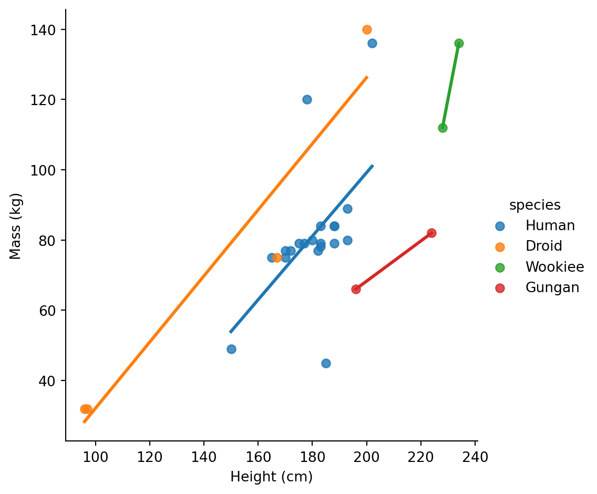
How does height differ between male and female characters?
# Filter to male/female only for cleaner comparison
sw_mf = sw.filter(col("sex").is_in(["male", "female"]))
sns.catplot(
data=sw_mf,
x="sex",
y="height",
kind="box"
).set_axis_labels("Sex", "Height (cm)")
Male characters tend to be taller, with more variability (wider box, more outliers).
Let’s see the individual data points too:
sns.catplot(
data=sw_mf,
x="sex",
y="height",
kind="swarm"
).set_axis_labels("Sex", "Height (cm)")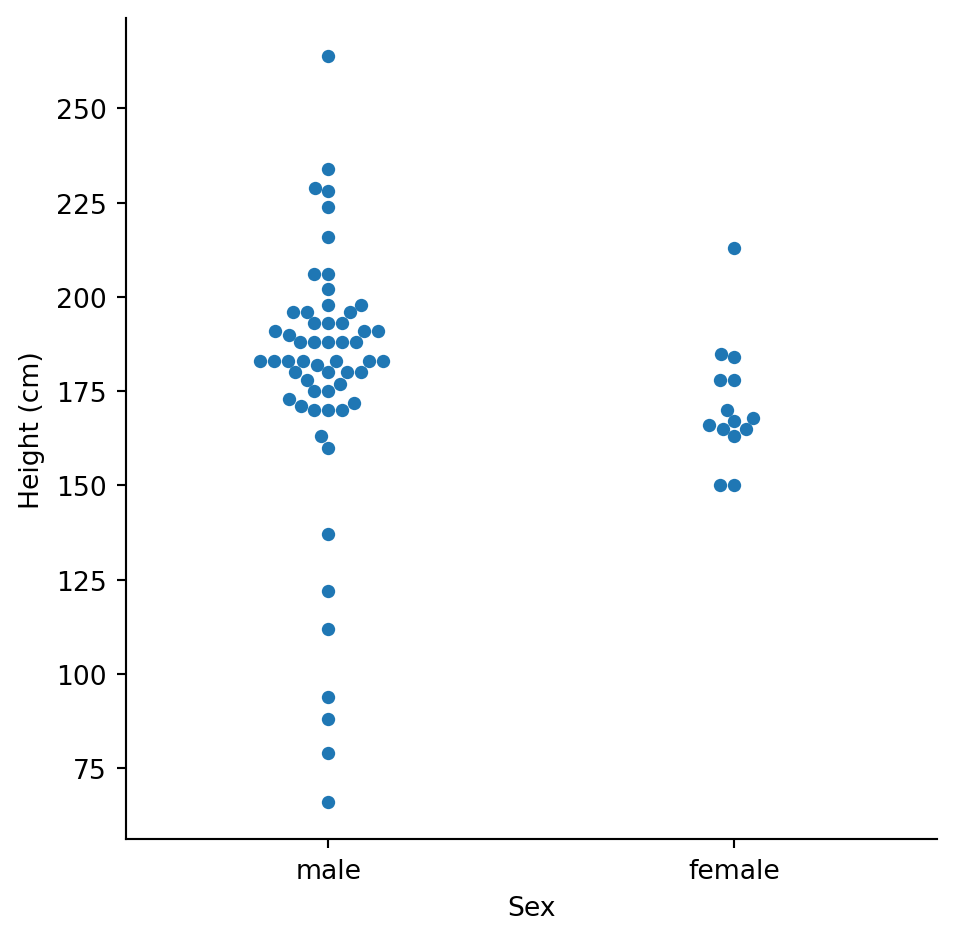
With only ~16 female characters, we should be cautious about drawing strong conclusions. The samples are very unequal.
One of seaborn’s strengths is easily splitting visualizations by category. Let’s look at how mass varies by sex across different homeworlds:
# Focus on homeworlds with enough characters
top_homeworlds = sw["homeworld"].value_counts().filter(col("count") >= 3)["homeworld"].to_list()
sw_subset = sw.filter(
col("homeworld").is_in(top_homeworlds) &
col("sex").is_in(["male", "female"]) &
col("mass").is_not_null()
)
sns.catplot(
data=sw_subset,
x="sex",
y="mass",
col="homeworld",
kind="strip",
col_wrap=3,
height=3
).set_axis_labels("Sex", "Mass (kg)")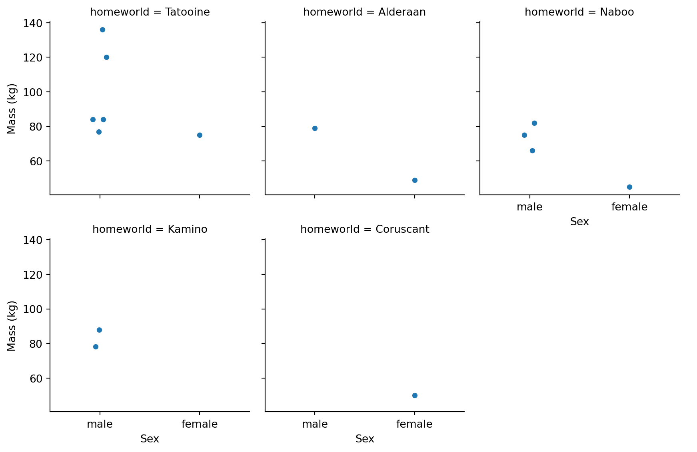
We can see a few patterns: - Most homeworlds have more male characters - Tatooine has characters spanning a wide mass range - Naboo characters tend to be lighter
Why might Naboo characters tend to be lighter? (Hint: think about which characters are from Naboo) Or explore some other relationships that you are interested
# Your code here# Your code here# Let's see who is from Naboo
sw.filter(col("homeworld") == "Naboo").select("name", "species", "sex", "mass")| name | species | sex | mass |
|---|---|---|---|
| str | str | str | f64 |
| "R2-D2" | "Droid" | "none" | 32.0 |
| "Palpatine" | "Human" | "male" | 75.0 |
| "Padmé Amidala" | "Human" | "female" | 45.0 |
| "Jar Jar Binks" | "Gungan" | "male" | 66.0 |
| "Roos Tarpals" | "Gungan" | "male" | 82.0 |
| … | … | … | … |
| "Ric Olié" | "Human" | "male" | null |
| "Quarsh Panaka" | "Human" | "male" | null |
| "Gregar Typho" | null | null | 85.0 |
| "Cordé" | null | null | null |
| "Dormé" | "Human" | "female" | null |
Naboo characters include Padmé Amidala and other human politicians/royalty (typically lighter build), plus Jar Jar Binks and other Gungans. The dataset doesn’t include many heavy Naboo characters.
# Let's explore another relationship: species and eye color
sw.filter(col("species").is_in(["Human", "Droid"])).group_by(
["species", "eye_color"]
).agg(
count=col("name").count()
).sort(["species", "count"], descending=[False, True])| species | eye_color | count |
|---|---|---|
| str | str | u32 |
| "Droid" | "red" | 3 |
| "Droid" | "yellow" | 1 |
| "Droid" | "red, blue" | 1 |
| "Droid" | "black" | 1 |
| "Human" | "brown" | 16 |
| … | … | … |
| "Human" | "yellow" | 2 |
| "Human" | "hazel" | 2 |
| "Human" | "blue-gray" | 1 |
| "Human" | "dark" | 1 |
| "Human" | "unknown" | 1 |
species_height = sw.group_by("species").agg(
mean_height=col("height").mean(),
count=col("height").count()
).filter(
col("count") >= 2 # Only species with multiple characters
).sort("mean_height", descending=True)
species_height.head(10)| species | mean_height | count |
|---|---|---|
| str | f64 | u32 |
| "Wookiee" | 231.0 | 2 |
| "Kaminoan" | 221.0 | 2 |
| "Gungan" | 208.666667 | 3 |
| "Twi'lek" | 179.0 | 2 |
| "Human" | 178.0 | 30 |
| null | 175.0 | 4 |
| "Zabrak" | 173.0 | 2 |
| "Mirialan" | 168.0 | 2 |
| "Droid" | 131.2 | 5 |
sns.catplot(
data=species_height.head(10),
y="species",
x="mean_height",
kind="bar",
height=5,
aspect=1.2
).set_axis_labels("Mean Height (cm)", "Species")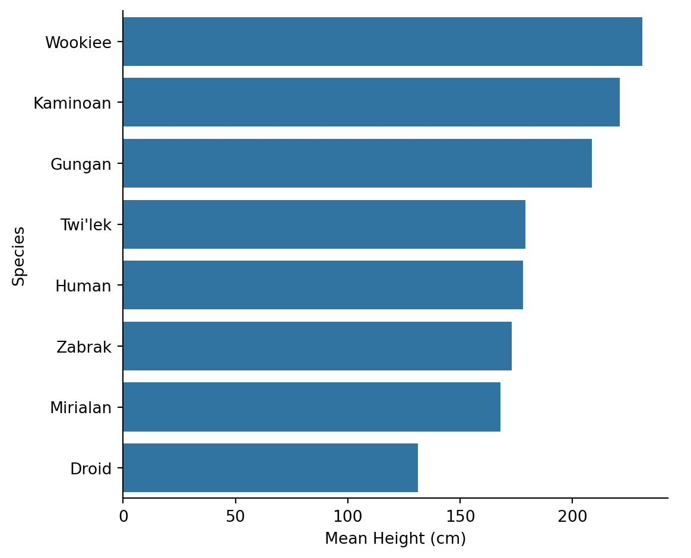
Kaminoans are the tallest species on average, followed by Wookiees. But note we filtered to species with at least 2 characters - with only 1-2 members, “averages” don’t mean much.
Do older characters tend to be shorter (like in real human populations)?
# Filter out extreme birth years and missing values
sw_age = sw.filter(
col("birth_year").is_not_null() &
(col("birth_year") < 200) # Exclude Yoda and others
)
sns.lmplot(
data=sw_age,
x="birth_year",
y="height",
height=5
).set_axis_labels("Birth Year (BBY)", "Height (cm)")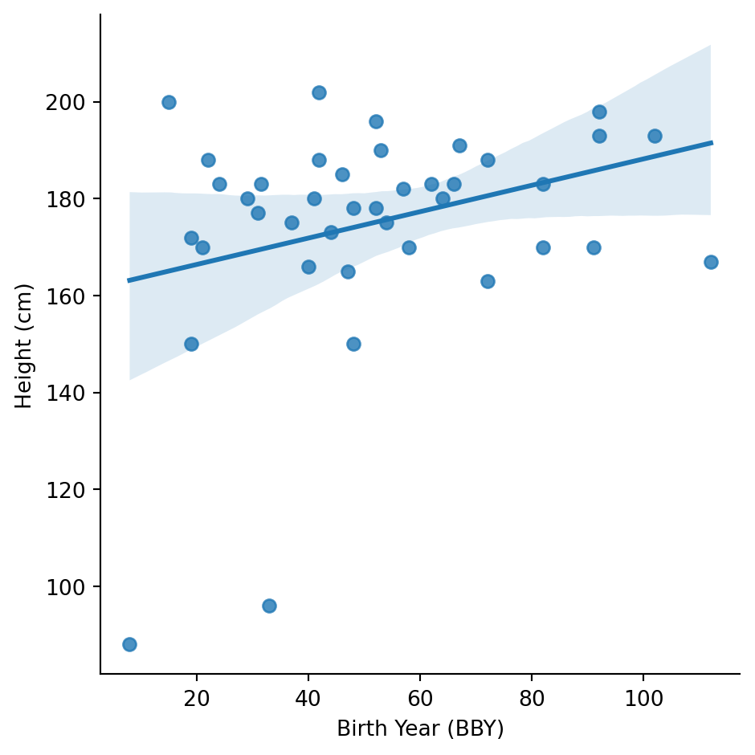
There’s a very weak positive relationship - older characters (higher BBY) might be slightly shorter. But the relationship is weak and could easily be noise.
Let’s check humans only:
sw_age_human = sw_age.filter(col("species") == "Human")
(
sns.lmplot(
data=sw_age_human,
x="birth_year",
y="height",
height=5
)
.set_axis_labels("Birth Year (BBY)", "Height (cm)")
.figure.suptitle("Humans Only", y=1.02, x=.55)
)Text(0.55, 1.02, 'Humans Only')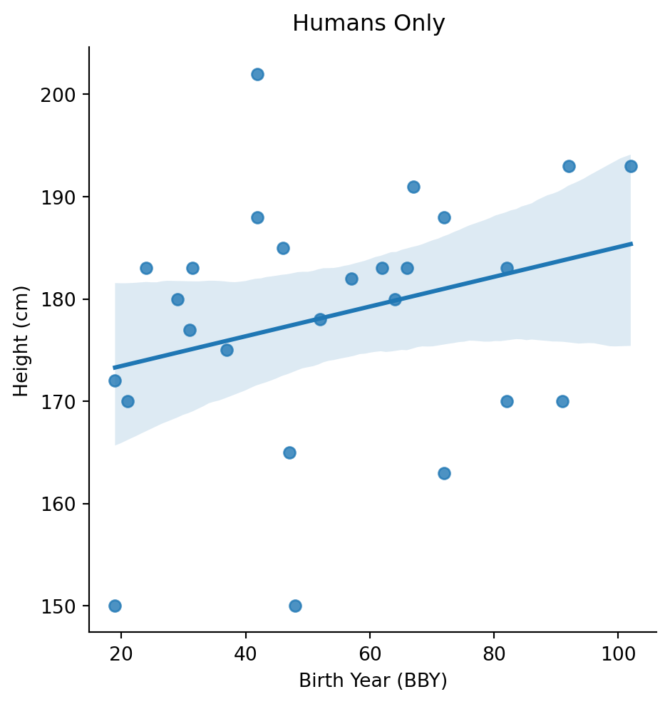
# For species with at least 3 characters
common_species_list = sw["species"].value_counts().filter(col("count") >= 3)["species"].to_list()
eye_by_species = sw.filter(
col("species").is_in(common_species_list)
).group_by(["species", "eye_color"]).agg(
count=col("name").count()
).sort(["species", "count"], descending=[False, True])
# Get the most common eye color for each species
eye_by_species.group_by('species', 'eye_color').len().sort(
['species', 'len'], descending=[False, True]).group_by('species').first()| species | eye_color | len |
|---|---|---|
| str | str | u32 |
| "Droid" | "yellow" | 1 |
| "Gungan" | "orange" | 1 |
| "Human" | "blue-gray" | 1 |
Sometimes you need to create new variables to answer your questions.
Let’s calculate BMI for the humanoid characters:
\[BMI = \frac{mass}{height^2} \times 10000\]
(The 10000 converts cm to m)
sw_bmi = sw.filter(
col("mass").is_not_null() &
col("height").is_not_null() &
(col("mass") < 500) # Exclude Jabba
).with_columns(
bmi=(col("mass") / (col("height") ** 2) * 10000).round(1)
)
sw_bmi.select("name", "height", "mass", "species", "bmi").head(10)| name | height | mass | species | bmi |
|---|---|---|---|---|
| str | f64 | f64 | str | f64 |
| "Luke Skywalker" | 172.0 | 77.0 | "Human" | 26.0 |
| "C-3PO" | 167.0 | 75.0 | "Droid" | 26.9 |
| "R2-D2" | 96.0 | 32.0 | "Droid" | 34.7 |
| "Darth Vader" | 202.0 | 136.0 | "Human" | 33.3 |
| "Leia Organa" | 150.0 | 49.0 | "Human" | 21.8 |
| "Owen Lars" | 178.0 | 120.0 | "Human" | 37.9 |
| "Beru Whitesun Lars" | 165.0 | 75.0 | "Human" | 27.5 |
| "R5-D4" | 97.0 | 32.0 | "Droid" | 34.0 |
| "Biggs Darklighter" | 183.0 | 84.0 | "Human" | 25.1 |
| "Obi-Wan Kenobi" | 182.0 | 77.0 | "Human" | 23.2 |
sns.displot(
data=sw_bmi,
x="bmi",
kind="hist",
bins=20
).set_axis_labels("BMI", "Count")
Most characters have BMIs in the 20-30 range, which would be “normal” to “overweight” for humans. But BMI was designed for humans - it doesn’t really make sense for Wookiees or droids!
# Who has the highest BMI?
sw_bmi.sort("bmi", descending=True).select("name", "species", "bmi").head(5)| name | species | bmi |
|---|---|---|
| str | str | f64 |
| "Dud Bolt" | "Vulptereen" | 50.9 |
| "Yoda" | "Yoda's species" | 39.0 |
| "Owen Lars" | "Human" | 37.9 |
| "IG-88" | "Droid" | 35.0 |
| "R2-D2" | "Droid" | 34.7 |
# Who has the lowest BMI?
sw_bmi.sort("bmi").select("name", "species", "bmi").head(5)| name | species | bmi |
|---|---|---|
| str | str | f64 |
| "Wat Tambor" | "Skakoan" | 12.9 |
| "Padmé Amidala" | "Human" | 13.1 |
| "Adi Gallia" | "Tholothian" | 14.8 |
| "Sly Moore" | null | 15.1 |
| "Roos Tarpals" | "Gungan" | 16.3 |
The lowest BMI belongs to droids (makes sense - they’re light for their size).
Let’s categorize characters by height:
sw_height_cat = sw.with_columns(
height_category=when(col("height") < 100).then(lit("short"))
.when(col("height") < 180).then(lit("medium"))
.when(col("height") < 220).then(lit("tall"))
.otherwise(lit("very tall"))
)
sw_height_cat["height_category"].value_counts().sort("count", descending=True)| height_category | count |
|---|---|
| str | u32 |
| "tall" | 39 |
| "medium" | 30 |
| "very tall" | 11 |
| "short" | 7 |
# Visualize mass by height category
sns.catplot(
data=sw_height_cat.filter(col("mass") < 200),
x="height_category",
y="mass",
kind="box",
order=["short", "medium", "tall", "very tall"]
).set_axis_labels("Height Category", "Mass (kg)")
As expected, taller categories have higher mass on average, but there’s overlap between groups.
Try playing around to create some variables you are interested in
# Your code here# Your code here# Create a "power ratio" - mass per unit height (density proxy)
sw_power = sw.filter(
col("mass").is_not_null() & col("height").is_not_null()
).with_columns(
power_ratio=(col("mass") / col("height")).round(2)
)
# Who has the highest power ratio?
sw_power.sort("power_ratio", descending=True).select("name", "species", "mass", "height", "power_ratio").head(10)| name | species | mass | height | power_ratio |
|---|---|---|---|---|
| str | str | f64 | f64 | f64 |
| "Jabba Desilijic Tiure" | "Hutt" | 1358.0 | 175.0 | 7.76 |
| "Grievous" | "Kaleesh" | 159.0 | 216.0 | 0.74 |
| "IG-88" | "Droid" | 140.0 | 200.0 | 0.7 |
| "Darth Vader" | "Human" | 136.0 | 202.0 | 0.67 |
| "Owen Lars" | "Human" | 120.0 | 178.0 | 0.67 |
| "Jek Tono Porkins" | null | 110.0 | 180.0 | 0.61 |
| "Bossk" | "Trandoshan" | 113.0 | 190.0 | 0.59 |
| "Tarfful" | "Wookiee" | 136.0 | 234.0 | 0.58 |
| "Dexter Jettster" | "Besalisk" | 102.0 | 198.0 | 0.52 |
| "Chewbacca" | "Wookiee" | 112.0 | 228.0 | 0.49 |
# Create age categories based on birth_year
sw_age_cat = sw.filter(col("birth_year").is_not_null()).with_columns(
age_category=when(col("birth_year") < 30).then(lit("young"))
.when(col("birth_year") < 60).then(lit("middle-aged"))
.when(col("birth_year") < 100).then(lit("older"))
.otherwise(lit("ancient"))
)
sw_age_cat["age_category"].value_counts().sort("count", descending=True)| age_category | count |
|---|---|
| str | u32 |
| "middle-aged" | 19 |
| "older" | 11 |
| "young" | 8 |
| "ancient" | 5 |
Good EDA isn’t just about making plots - it’s about learning something and communicating it.
Here’s what we learned about the Star Wars dataset:
Data Quality: - 87 characters, 11 variables - Significant missing data: birth_year (50%), mass (32%), height (7%) - One extreme outlier: Jabba the Hutt (mass = 1,358 kg)
Variable Distributions: - Height is roughly normal, centered around 175 cm - Mass is heavily right-skewed due to outliers - Dataset is dominated by male human characters
Key Relationships: - Height and mass are positively correlated (taller = heavier) - This relationship varies by species (especially for droids) - No clear relationship between age and height within humans
Caveats: - Small sample sizes for most species (only Humans have n>10) - Gender imbalance limits sex comparisons - BMI and similar metrics designed for humans don’t generalize well
Use what you’ve learned to answer these questions. Create as many new cells as you need below each question.
1. Which homeworld has the greatest diversity of species?
Hint: group by homeworld and count unique species
# Your code here (create more cells as needed)sw.filter(
col("homeworld").is_not_null() & col("species").is_not_null()
).group_by("homeworld").agg(
n_species=col("species").n_unique(),
species_list=col("species").unique()
).sort("n_species", descending=True).head(10)| homeworld | n_species | species_list |
|---|---|---|
| str | u32 | list[str] |
| "Naboo" | 3 | ["Droid", "Human", "Gungan"] |
| "Tatooine" | 2 | ["Human", "Droid"] |
| "Kamino" | 2 | ["Human", "Kaminoan"] |
| "Coruscant" | 2 | ["Human", "Tholothian"] |
| "Cerea" | 1 | ["Cerean"] |
| "Vulpter" | 1 | ["Vulptereen"] |
| "Trandosha" | 1 | ["Trandoshan"] |
| "Stewjon" | 1 | ["Human"] |
| "Dathomir" | 1 | ["Zabrak"] |
| "Troiken" | 1 | ["Xexto"] |
Naboo has the greatest diversity with 3 different species (Human, Gungan, and Droid).
2. Create a visualization comparing the height distributions of Humans vs Droids
Hint: use displot with hue
# Your code here (create more cells as needed)sns.displot(
data=sw.filter(col("species").is_in(["Human", "Droid"])),
x="height",
hue="species",
kind="hist",
bins=15,
alpha=0.6
).set_axis_labels("Height (cm)", "Count")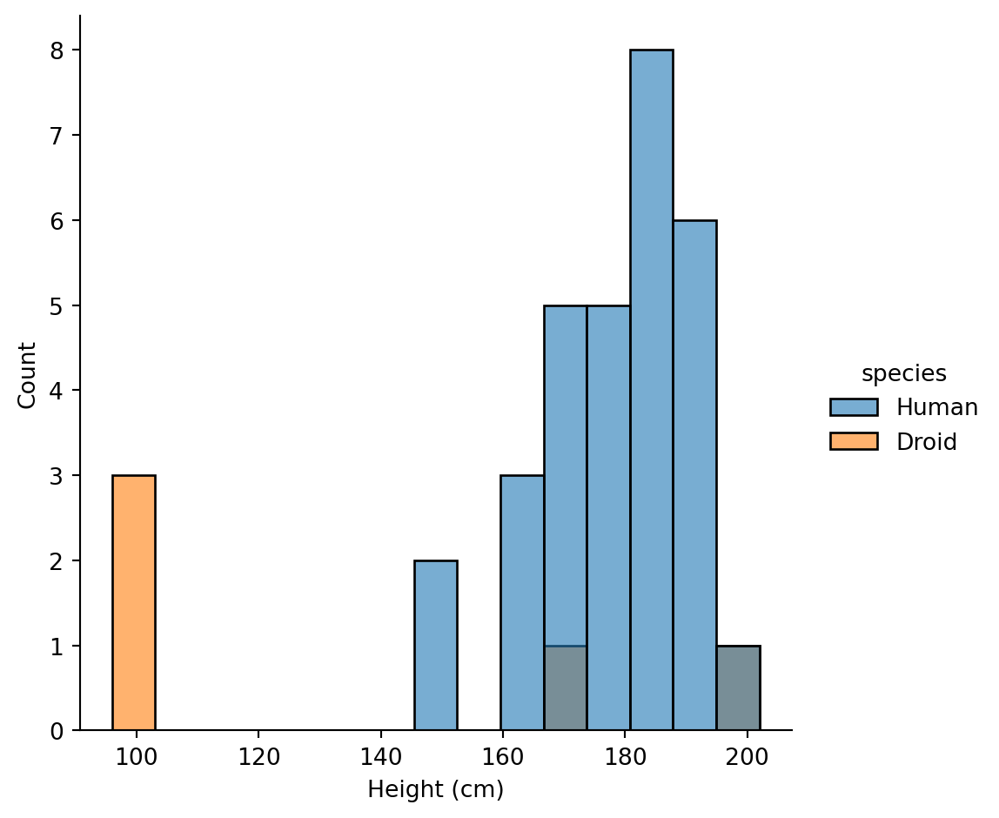
Humans have a wider height distribution centered around 175-180cm, while Droids are more variable with some very short (R2-D2) and some tall (IG-88) units.
3. Who is the heaviest character from each homeworld?
Hint: sort by mass within each homeworld group, then take the first
# Your code here (create more cells as needed)sw.filter(
col("homeworld").is_not_null() & col("mass").is_not_null()
).sort("mass", descending=True).group_by("homeworld").first().select(
"homeworld", "name", "species", "mass"
).sort("mass", descending=True)| homeworld | name | species | mass |
|---|---|---|---|
| str | str | str | f64 |
| "Nal Hutta" | "Jabba Desilijic Tiure" | "Hutt" | 1358.0 |
| "Kalee" | "Grievous" | "Kaleesh" | 159.0 |
| "Tatooine" | "Darth Vader" | "Human" | 136.0 |
| "Kashyyyk" | "Tarfful" | "Wookiee" | 136.0 |
| "Trandosha" | "Bossk" | "Trandoshan" | 113.0 |
| … | … | … | … |
| "Umbara" | "Sly Moore" | null | 48.0 |
| "Vulpter" | "Dud Bolt" | "Vulptereen" | 45.0 |
| "Malastare" | "Sebulba" | "Dug" | 40.0 |
| "Endor" | "Wicket Systri Warrick" | "Ewok" | 20.0 |
| "Aleen Minor" | "Ratts Tyerel" | "Aleena" | 15.0 |
Jabba the Hutt dominates from Nal Hutta (1,358 kg), followed by Grievous from Kalee (159 kg) and IG-88 (140 kg, unknown homeworld).
4. Is there a relationship between hair color and height for human characters?
Hint: filter to humans, then create a boxplot of height by hair color
# Your code here (create more cells as needed)# Filter to humans with non-null hair color and height
humans = sw.filter(
(col("species") == "Human") &
col("hair_color").is_not_null() &
col("height").is_not_null()
)
# See what hair colors we have
humans["hair_color"].value_counts().sort("count", descending=True)| hair_color | count |
|---|---|
| str | u32 |
| "brown" | 10 |
| "black" | 7 |
| "none" | 3 |
| "blond" | 3 |
| "white" | 2 |
| "grey" | 1 |
| "auburn, grey" | 1 |
| "brown, grey" | 1 |
| "auburn" | 1 |
| "auburn, white" | 1 |
sns.catplot(
data=humans,
x="hair_color",
y="height",
kind="box",
height=5,
aspect=1.5,
order=humans["hair_color"].value_counts().sort("count", descending=True)["hair_color"].to_list()
).set_axis_labels("Hair Color", "Height (cm)")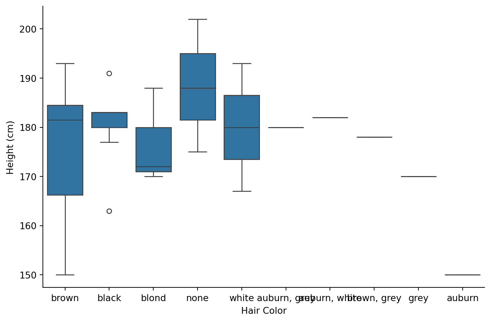
Theres no clear relationship between hair color and height. Brown-haired humans show the widest range (most data points), while other colors have too few observations to draw conclusions.